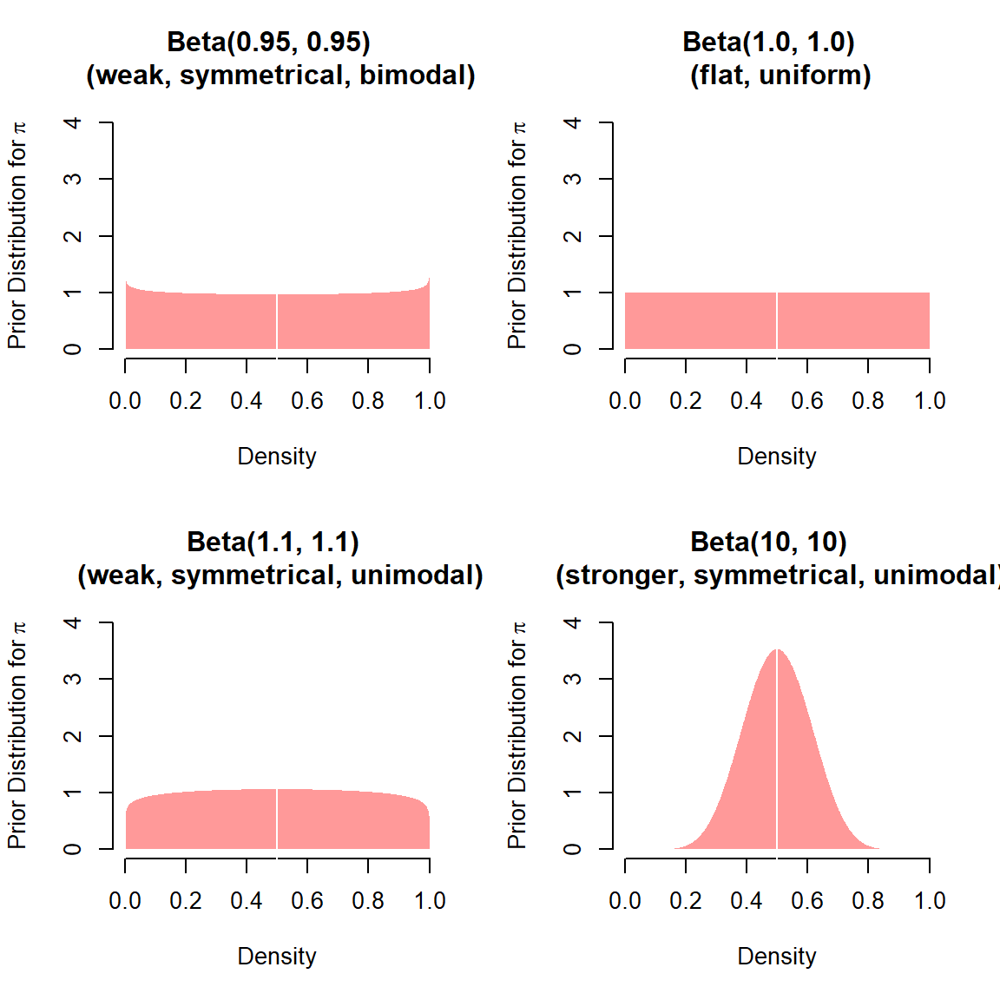

In the Bayesian world the unobserved quantities are assigned distributional properties and, therefore, become random variables in the analysis.
These distributions come in two basic flavors. If the distribution of the unknown quantity is not conditioned on fixed data, it is called prior distribution because it describes knowledge prior to seeing data.
Alternatively, if the distribution is conditioned on data that we observe, it is clearly updated from the unconditioned state and, therefore, more informed. This distribution is called posterior distribution. […]
The punchline is this: All likelihood-based models are Bayesian models in which the prior distribution is an appropriately selected uniform prior, and as the size of the data gets large they are identical given any finite appropriate prior. So such empirical researchers are really Bayesian; they just do not know it yet.
\[p(\mathbf{y}|\mu, \sigma) = \prod_{i=1}^{N} \frac{1}{\sigma \sqrt{2 \pi}} e^{- 0.5 \left( (y_i - \mu_i)^2 / \sigma \right)}\]
Suppose we flip a coin up to \(N\) times:

Remember: \[p(\theta | \mathbf{y}) \propto p(\theta) \times p(\mathbf{y}|\theta)\]
So what does this mean in the present example?
\[\begin{split}p(\pi|n,k) & \propto p(\pi) \times p(k|n, \pi) \\ p(\pi|n,k) & \propto \frac{\pi^{a-1} (1- \pi)^{b-1}}{\text{B}(a, b)} \times {n \choose k} \pi^k (1-\pi)^{(n-k)}\end{split}\]
Note that since we use the proportional version of Bayes’ Law (i.e., we do not stipulate exact equality), we can drop any constant terms that do not involve our parameter of interest, \(\pi\):
\[\begin{split}p(\pi|n,k) & \propto \pi^{a-1} (1- \pi)^{b-1} \times \pi^k (1-\pi)^{(n-k)}\end{split}\] The rest, then, is easy: Following the rules of exponentiation, we add exponents for identical bases. This gives us our posterior distribution for \(\pi\):
\[\begin{split}p(\pi|n,k) & \propto \pi^{a+k-1} (1- \pi)^{b+n-k-1}\end{split}\] As you see, our posterior has the exact same form as our prior. It is a beta distribution with updated parameters
This property is called conjugacy: Prior and posterior are in the same family.
Now, take a moment to think about our analytical solution for the updated parameters. What does it take for the data to dominate the prior? What if the prior is weak? What if the prior is strong?
Code: Defining and plotting the prior distribution
len_pi <- 1001L ### number of candidate values for pi
pi <- seq(0, 1, length.out = len_pi) ### candidate values for pi
a <- b <- 5 ### hyperparameters
prior <- dbeta(pi, a, b) ### prior distribution
## Plot
plot( ### set up empty plot, specify labels
pi, prior,
type = 'n',
xlab = "Density",
ylab = expression(paste("Prior Distribution for ", pi))
)
polygon( ### draw density distribution
c(rep(0, length(pi)), pi),
c(prior, rev(prior)),
col = adjustcolor('red', alpha.f = .4),
border = NA
)
abline( ### add vertical at pi = 0.5
v = .5,
col = 'white'
) Code: Simulating the experiment
set.seed(20210329) ### set seed for replicability
len_pi <- 1001L ### number of candidate values for pi
pi <- seq(0, 1, length.out = len_pi) ### candidate values for pi
a <- b <- 5 ### hyperparameters
n <- 200 ### num. of coin flips
pi_true <- .8 ### true parameter
data <- rbinom(n, 1, pi_true) ### n coin flips
posterior <- matrix(NA, 3L, n) ### matrix container for posterior
for (i in seq_len(n)) {
current_sequenceuence <- data[1:i] ### sequence up until ith draw
k <- sum(current_sequenceuence) ### number of heads in current sequence
##### Updating
a_prime <- a + k
b_prime <- b + i - k
### Analytical means and credible intervals
posterior[1, i] <- a_prime / (a_prime + b_prime)
posterior[2, i] <- qbeta(0.025, a_prime, b_prime)
posterior[3, i] <- qbeta(0.975, a_prime, b_prime)
}
## Plot
plot( ### set up empty plot with labels
1:n, 1:n,
type = 'n',
xlab = "Number of Coin Flips",
ylab = expression(paste("Posterior Means of ",
pi,
sep = " ")),
ylim = c(0, 1),
xlim = c(1, n)
)
abline( ### reference line for the true pi
h = c(.5, .8),
col = "gray80"
)
rect(-.5, qbeta(0.025, 5, 5), ### prior mean + interval at i = 0
0.5, qbeta(0.975, 5, 5),
col = adjustcolor('red', .4),
border = adjustcolor('red', .2))
segments(-.5, .5,
0.5, .5,
col = adjustcolor('red', .9),
lwd = 1.5)
polygon( ### posterior means + intervals
c(seq_len(n), rev(seq_len(n))),
c(posterior[2, ], rev(posterior[3, ])),
col = adjustcolor('blue', .4),
border = adjustcolor('blue', .2)
)
lines(
seq_len(n),
posterior[1, ],
col = adjustcolor('blue', .9),
lwd = 1.5
)That’s where numerical approximation through Markov Chain Monte Carlo (MCMC) algorithms comes in:
The Hamiltonian Monte Carlo algorithm starts at a specified initial set of parameters \(\theta\); in Stan, this value is either user-specified or generated randomly. Then, for a given number of iterations, a new momentum vector is sampled and the current value of the parameter \(\theta\) is updated using the leapfrog integrator with discretization time \(\epsilon\) and number of steps \(L\) according to the Hamiltonian dynamics. Then a Metropolis acceptance step is applied, and a decision is made whether to update to the new state \((\theta^{\ast},\rho{\ast})\) or keep the existing state.
sup_afd from the data set gles.Our prior belief that \(\mu\) is distributed normal with mean \(\theta = 0\) and precision \(\omega = .1\), i.e., \(\mu \sim \text{N}(0, 10)\). Hence, the prior pdf is given by:
\[ p(\mu | \theta, \omega) = \sqrt{\frac{\omega}{2 \pi}} \exp \left (-\frac{\omega (\mu - \theta)^2}{2} \right) \]
while the likelihood for the data \(\mathbf{y}\) is given by
\[ p(\mathbf{y} | \mu, \tau) = \prod_{i}^{N} \sqrt{\frac{\tau}{2\pi}} \exp\left(-\frac{\tau(y_i-\mu)^2}{2} \right) \]
Multiplying prior and likelihood and performing some algebraic transformations, we see that our conditional posterior density will be
\[ p(\mu | \theta, \omega, \tau, \mathbf{y}) \propto \exp \left(-\frac{\omega + N \tau}{2} \left(\mu - \frac{\omega \theta + N \tau \bar{y}}{\omega + N \tau}\right)^2 \right) \]
We recognize this as the normal pdf with mean \(\theta^{\ast} = \frac{\omega \theta + N \tau \bar{y}}{\omega + N \tau}\) and precision \(\omega^{\ast} = \omega + N \tau\).
This gives us the required analytical solutions for the normal parameters that characterize the posterior density of \(\mu\) that we want our Gibbs sampler to explore.
Furthermore, for our prior knowledge about the precision, we assume that \(\tau\) is Gamma-distributed with shape \(\alpha=20\) and rate \(\beta = 200\): \(\tau \sim \Gamma(20, 200)\) which yields the prior pdf:
\[ p(\tau | \alpha, \beta) = \frac{\beta^{\alpha}}{\Gamma(\alpha)} \tau^{\alpha - 1} \exp(-\beta \tau) \]
while the likelihood for the data is still given by
\[ p(\mathbf{y} | \mu, \tau) = \prod_{i}^{N} \sqrt{\frac{\tau}{2\pi}} \exp\left(-\frac{\tau(y_i-\mu)^2}{2}\right) \]
Once again taking the product and rearranging, we find that the conditional posterior pdf of \(\tau\) is given by
\[ p(\tau | \alpha, \beta, \mu, \mathbf{y}) \propto \tau^{\alpha + \frac{N}{2} - 1} \exp\left(-\left(\beta + \sum_{i=1}^{N} \frac{(y_i - \mu)^2}{2} \tau\right)\right) \]
This is a gamma distribution with updated parameters \(\alpha^{\ast} = \alpha + \frac{N}{2}\) and \(\beta^{\ast} = \beta + \sum_{i=1}^{N} \frac{(x_i - \mu)^2}{2}\). Thus, we also have analytical solutions for the Gamma parameters that characterize the posterior density of \(\tau\).
Code: Function for simulating the priors
# Function
draw_from_prior <-
function(theta,
omega,
alpha,
beta,
n_draws,
seed = 20210329) {
# Set seed
set.seed(seed)
# Take draws
mu <- rnorm(n_draws, theta, 1 / sqrt(omega))
tau <- rgamma(n_draws, alpha, beta)
## Return output
return(list(mu = mu,
tau = tau))
}# Apply function
draws_prior <-
draw_from_prior(
theta = 0,
omega = .1,
alpha = 20,
beta = 200,
n_draws = 4000
)
# Plots of Marginal Densities
par(mfrow = c(1, 3), oma = c(0, 0, 3, 0))
plot(density(draws_prior$mu),
main = expression("Marginal Density of" ~ mu))
plot(density(draws_prior$tau),
main = expression("Marginal Density of" ~ tau))
plot(density(1 / draws_prior$tau),
main = expression("Marginal Density of" ~ sigma^2))
title("Prior Distribution of Mean and Precision", outer = T) Code: Gibbs sampler for the posterior
# Define function
draw_from_posterior <- function(theta,
omega,
alpha,
beta,
n_warmup,
n_draws,
data,
seed = 20210329,
keep_warmup = TRUE) {
# Set seed
set.seed(seed)
# Length of chain
len_chain <- n_warmup + n_draws
# Data characteristics
n_data <- length(data)
mean_data <- mean(data)
# Initialize containers
mu <- rep(NA, len_chain)
tau <- rep(NA, len_chain)
# Run Gibbs sampler
for (i in seq_len(len_chain)) {
if (i == 1) {
## Iteration 1: Initialize from prior
alpha_star <- alpha
beta_star <- beta
} else {
## Iterations 2+: Update alpha and beta
alpha_star <- alpha + n_data / 2
beta_star <- beta + sum(((data - mu[i - 1]) ^ 2) / 2)
}
## Sample tau
tau[i] <- rgamma(1, alpha_star, beta_star)
## Update theta and omega
theta_star <-
(omega * theta + n_data * tau[i] * mean_data) /
(omega + n_data * tau[i])
omega_star <- omega + n_data * tau[i]
## Sample mu
mu[i] <- rnorm(1, theta_star, 1 / sqrt(omega_star))
}
## Conditionally discard warmup-draws
if (!keep_warmup) {
tau <- tau[(n_warmup + 1):len_chain]
mu <- mu[(n_warmup + 1):len_chain]
}
## Return output
return(list(mu = mu,
tau = tau))
}# Apply function
draws_posterior <-
draw_from_posterior(
theta = 0,
omega = .1,
alpha = 20,
beta = 200,
n_warmup = 1000,
n_draws = 1000,
data = gles$sup_afd,
keep_warmup = TRUE
)
draws_posterior_post_warmup <-
draw_from_posterior(
theta = 0,
omega = .1,
alpha = 20,
beta = 200,
n_warmup = 1000,
n_draws = 1000,
data = gles$sup_afd,
keep_warmup = FALSE
)
# Plots of Marginal Densities and Trace Plots
par(mfrow = c(3, 2),
oma = c(0, 0, 3, 0))
# Plot mu
plot(
seq_along(draws_posterior$mu),
draws_posterior$mu,
type = "l",
lwd = .3,
main = expression("Trace Plot for" ~ mu),
xlab = "Draws",
ylab = expression(mu)
)
lines(predict(loess(
draws_posterior$mu ~ seq_along(draws_posterior$mu), span = .1
)),
col = 'red', lwd = 1)
plot(density(draws_posterior_post_warmup$mu),
main = expression("Marginal Density of" ~ mu))
# Plot tau
plot(
seq_along(draws_posterior$tau),
draws_posterior$tau,
type = "l",
lwd = .3,
main = expression("Trace Plot for" ~ tau),
xlab = "Draws",
ylab = expression(tau)
)
lines(predict(loess(
draws_posterior$tau ~ seq_along(draws_posterior$tau), span = .1
)),
col = 'red', lwd = 1)
plot(density(draws_posterior_post_warmup$tau),
main = expression("Marginal Density of" ~ tau))
title("Posterior Distribution of Mean and Precision", outer = T)
# Plot sigma^2
plot(
seq_along(draws_posterior$tau),
1 / draws_posterior$tau,
type = "l",
lwd = .3,
main = expression("Trace Plot for" ~ sigma ^ 2),
xlab = "Draws",
ylab = expression(tau)
)
lines(predict(loess(
I(1 / draws_posterior$tau) ~ seq_along(draws_posterior$tau), span = .1)),
col = 'red', lwd = 1)
plot(density(1 / draws_posterior_post_warmup$tau),
main = expression("Marginal Density of" ~ sigma ^ 2))
title("Posterior Distribution of Mean and Precision", outer = T)# Apply function
draws_posterior <-
draw_from_posterior(
theta = 0,
omega = .1,
alpha = 20,
beta = 200,
n_warmup = 1000,
n_draws = 1000,
data = gles$sup_afd,
keep_warmup = TRUE
)
# Save as matrix, transform precision to variance
draws_posterior <- simplify2array(draws_posterior)
draws_posterior[, 2] <- 1 / draws_posterior[, 2]
# Plot
for (i in 1:nrow(draws_posterior)) {
if (i == 1) {
plot(
draws_posterior[i, 1],
draws_posterior[i, 2],
pch = 19,
xlim = range(draws_posterior[, 1]),
ylim = range(draws_posterior[, 2]),
main = "Exploration of the joint posterior",
xlab = expression(mu),
ylab = expression(sigma),
col = "gray60"
)
} else {
segments(draws_posterior[i - 1, 1],
draws_posterior[i - 1, 2],
draws_posterior[i, 1],
draws_posterior[i, 2],
col = adjustcolor("gray10", alpha.f = 0.075),
lwd = 3)
}
}MCMC algorithms use iterative algorithms to explore posterior distributions and to produce numerical approximations thereof.
However, even with appropriately specified models and algorithms, we can never know a priori if and when a chain has converged to its target distribution. We must thus rely on convergence diagnostics.
Important: Convergence diagnostics cannot show or prove convergence. They can only show signs of non-convergence!
To be conclude that the post-warmup draws of our sampler in fact explore the target distribution, we want to show at least two things:
Generic diagnostics (see Gill 2015, Ch. 14.3) include:
save_warmup = TRUE) to estimate minimum required length of warmup and samplingThese are implemented as part of the coda package (Output Analysis and Diagnostics for MCMC).
The most widespread visual diagnostics are:
In the following, we will use multiple chain runs of our sampler in conjunction with the coda package to check for signs of non-convergence.
Note that coda functions require that we combine our chains into mcmc.list objects.
The Raftery-Lewis diagnostic takes a single chain, including warm-up draws, to estimate the minimum required length of warmup and sampling runs:
# Example: Gill 2015, p. 503
# If we want a 95% credible interval around the median
# with reliability between 92.5% and 97.5%, we need:
q <- 0.5 # quantile of interest
r <- 0.0125 # margin of error
s <- 0.95 # desired reliability
## The recommend length for the pilot run:
n <- ceiling((qnorm(.5 * (s + 1)) * sqrt(q * (1 - q)) / r) ^ 2)
# Pilot run
draws_pilot <-
draw_from_posterior(
theta = 0,
omega = .1,
alpha = 20,
beta = 200,
n_warmup = 0,
n_draws = n,
data = gles$sup_afd,
keep_warmup = TRUE
)
# Save as mcmc
draws_pilot <- as.mcmc(simplify2array(draws_pilot))
# Diagnose
raftery.diag(
draws_pilot,
q = q,
r = r,
s = s
)We will use the recommended run-length from the Raftery-Lewis diagnostic for four independent runs of our sampler.
We will ensure that ou chains run independently (i.e., using different starting values and different random number sequences) by setting different seed:
seeds <- sample(10001:99999, 4)
draws_multiple_chains <- lapply(seeds,
function(seed) {
as.mcmc(simplify2array(
draw_from_posterior(
theta = 0,
omega = .1,
alpha = 20,
beta = 200,
n_warmup = 200,
n_draws = 6147,
data = gles$sup_afd,
keep_warmup = FALSE,
seed = seed
)
))
})
# Save as mcmc.list
draws_multiple_chains <- as.mcmc.list(draws_multiple_chains)# Diagnose
coda::gelman.diag(draws_multiple_chains, autoburnin = FALSE)
coda::geweke.diag(draws_multiple_chains, frac1 = .1, frac2 = .5)
coda::heidel.diag(draws_multiple_chains, pvalue = .1) par(mfrow = c(1, 2))
coda::traceplot(draws_multiple_chains, smooth = TRUE)coda::autocorr.plot(draws_multiple_chains)